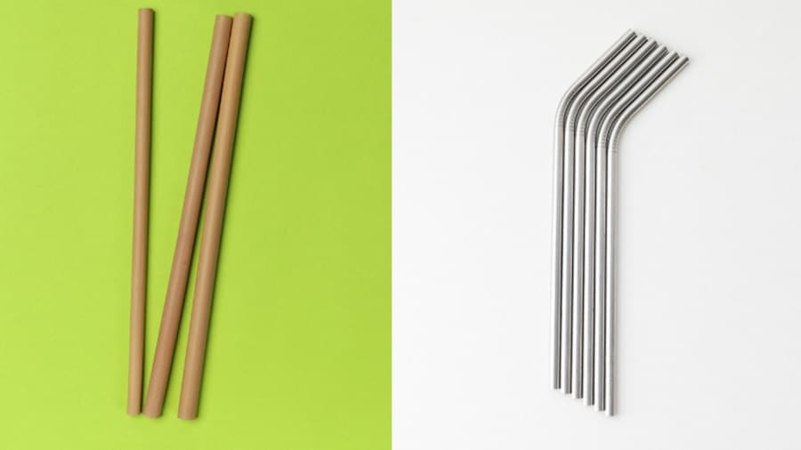

1. Totebag
Totebag merupakan alternatif ramah lingkungan untuk kantong plastik yang banyak digunakan dalam belanja. Berdasarkan data dari SIPSN, pada tahun 2022, 18,19% sampah plastik berasal dari kantong plastik. Dengan menggunakan totebag, kita dapat mengurangi ketergantungan pada plastik sekali pakai, karena totebag dapat digunakan berkali-kali dan dicuci saat kotor. Meskipun supermarket sudah mulai mengganti kantong plastik dengan totebag, di pasar atau toko kecil, plastik masih banyak digunakan. Oleh karena itu, penting bagi kita untuk membawa totebag sendiri sebagai upaya mengurangi sampah plastik di sekitar kita.
2. Sedotan Stainless Steel atau Bambu
Di era modern sekarang ini, plastik banyak dipilih untuk bahan baku pembuatan bungkus makanan hingga alat makan berupa piring, sendok, dan sedotan. Selain harganya yang murah, plastik juga dianggap lebih praktis, mengingat beratnya yang sangat ringan dan tak mudah rusak. Di antara banyaknya benda berbahan plastik, sedotan menjadi salah satu yang paling sering kita temui sehari-hari, baik di cafe, restoran, bahkan warung kaki lima. Namun, di balik manfaatnya, ternyata sedotan merupakan salah satu penyumbang sampah plastik terbesar di dunia, lho. Dilansir U.S News, terdapat lebih dari 35 juta ton sampah plastik yang diproduksi setiap tahunnya. Dan menurut peneliti asal Australia, Denise Hardesty dan Chris Wilcox, terdapat lebih dari 8 milyar sedotan bekas yang ditemukan di sepanjang bibir pantai dunia setiap tahunnya.
Tak hanya sulit diurai dan didaur ulang, sampah plastik ternyata sangat berbahaya bagi kelangsungan hidup biota laut. Bentuknya yang kecil seringkali tersangkut, bahkan termakan oleh penyu, ikan, dan burung yang dapat menyebabkan keracunan pada hewan.
Di tengah masalah limbah plastik yang semakin pelik, kini muncul berbagai kampanye bebas sedotan plastik yang semakin gencar di berbagai negara. Bahkan, beberapa franchise besar pun ikut berpartisipasi untuk mengurangi limbah plastik. Salah satunya mengganti penggunaan sedotan plastik dengan sedotan dari bambu, stainless steel, atau akrilik yang lebih ramah lingkungan.
3. Botol Minum Reusable
Kelebihan utama tumbler tidak hanya terletak pada aspek ekologisnya. Tumbler atau botol minum juga menghadirkan sejumlah manfaat kesehatan yang signifikan. Dibandingkan dengan botol plastik, tumbler atau botol minum sering kali bebas dari bahan kimia berbahaya yang dapat terlepas ke dalam minuman Anda. Selain itu, beberapa tumbler dirancang khusus untuk menjaga suhu minuman, menjadikannya pilihan ideal untuk mereka yang ingin minum air dingin atau panas kapan saja.
Penggunaan tumbler juga dapat menjadi pengingat yang efektif untuk tetap terhidrasi sepanjang hari. Desain portabelnya memungkinkan Anda membawa tumbler ke kantor, gym, atau perjalanan jauh tanpa kesulitan. Dengan begitu, tumbler tidak hanya menjadi aksesori gaya hidup, tetapi juga mitra setia dalam menjaga kesehatan dan merawat lingkungan. Sebagai simbol perubahan kecil namun penting, tumbler atau botol minum memungkinkan kita semua berkontribusi pada upaya global untuk mengurangi limbah plastik dan merangkul pola hidup yang lebih berkelanjutan.
Seiring dengan peningkatan kesadaran akan lingkungan dan kesehatan, tumbler atau botol minum menjadi pilihan utama bagi banyak individu yang ingin mengurangi jejak karbon mereka dan merawat kesehatan diri. Dalam artikel ini, kita akan menjelajahi lebih lanjut tentang tumbler, apa itu, dan bagaimana penggunaannya dapat memberikan manfaat signifikan.
4. Sabun Batangan dan Sampo Padat
Alasan pertama yang paling penting ialah untuk mengurangi limbah plastik dan melindungi bumi. Menurut data Kementerian Lingkungan Hidup dan Kehutanan (KLHK), 17% dari sampah nasional di Indonesia tahun 2021 berasal dari sampah plastik. Plastik diperkirakan membutuhkan waktu 100 hingga 500 tahun hingga dapat terdekomposisi (terurai) dengan sempurna. Sudah tidak bisa dipungkiri, bahwa kita turut menyumbang sampah plastik tersebut dari botol kemasan sampo yang kita gunakan. Maka, agar lebih sustainable dan melindungi lingkungan, ada baiknya jika kita berpindah ke sampo padat yang memiliki kemasan non-plastik serta lebih mudah diurai.
5. Panel Surya portable
Panel surya portable adalah perangkat yang mengubah energi matahari menjadi listrik menggunakan sel surya yang mudah dibawa dan digunakan. Manfaat utama panel ini dalam konteks ramah lingkungan adalah mengurangi ketergantungan pada sumber energi fosil seperti minyak dan batu bara yang berkontribusi pada polusi udara dan pemanasan global. Dengan menggunakan energi terbarukan, panel surya portable mengurangi emisi karbon dioksida dan limbah, serta memberikan solusi energi bersih dan terjangkau untuk berbagai kebutuhan, terutama di daerah terpencil atau saat beraktivitas di luar ruangan. Selain itu, panel ini tidak menghasilkan polusi suara atau zat berbahaya lainnya.
6. Make-up Organik
Make-up organik ramah lingkungan karena terbuat dari bahan-bahan alami yang tidak mengandung bahan kimia berbahaya, seperti paraben, sulfat, atau pewarna sintetis. Produk ini lebih aman bagi kulit dan tidak mencemari lingkungan, karena bahan-bahannya mudah terurai secara alami. Selain itu, banyak produk make-up organik yang menggunakan kemasan ramah lingkungan, seperti bahan daur ulang atau kemasan yang dapat digunakan kembali, mengurangi sampah plastik dan dampak negatif terhadap ekosistem. Make-up organik mendukung gaya hidup berkelanjutan dengan memberikan pilihan kecantikan yang lebih sehat dan lebih ramah lingkungan.
7. Lampu LED Hemat Energi
Lampu LED dikenal sebagai salah satu teknologi pencahayaan yang paling hemat energi. Lampu ini menggunakan daya listrik yang jauh lebih sedikit untuk menghasilkan cahaya yang setara dengan lampu pijar atau fluorescent. Penggunaan lampu LED dapat mengurangi konsumsi energi hingga 80%, yang pada akhirnya akan menurunkan tagihan listrik rumah tangga atau bisnis secara signifikan. Lampu LED juga lebih ramah lingkungan karena tidak mengandung zat berbahaya seperti merkuri, yang biasa ditemukan dalam lampu fluorescent. Selain itu, karena lampu LED memiliki masa pakai yang lebih lama dan menggunakan lebih sedikit energi, penggunaan lampu ini membantu mengurangi jejak karbon dan limbah elektronik.
8. Pembalut ramah lingkungan
Pembalut ramah lingkungan terbuat dari bahan alami yang mudah terurai, mengurangi dampak negatif terhadap lingkungan dibandingkan pembalut plastik. Penggunaan pembalut plastik dapat mencemari tanah dan air, menyebabkan polusi yang berpotensi membahayakan kesehatan. Pembalut eco-friendly juga lebih aman karena menghindari bahan kimia berbahaya yang dapat merusak kesehatan, sekaligus mengurangi limbah plastik yang sulit terurai. Selain manfaat untuk lingkungan, pembalut ramah lingkungan membantu mencegah kontaminasi sumber air dan tanah dari limbah biologis.
9. Kendaraan listrik (sepeda motor dan mobil)

Kendaraan listrik, baik sepeda motor maupun mobil, memberikan berbagai manfaat positif bagi lingkungan. Kendaraan ini tidak menghasilkan emisi langsung seperti karbon dioksida (CO₂), nitrogen oksida (NOx), atau partikel berbahaya, sehingga membantu mengurangi polusi udara di perkotaan. Dengan pengisian daya yang menggunakan energi terbarukan seperti tenaga surya atau angin, dampaknya terhadap lingkungan semakin positif.
Manfaat utama kendaraan listrik bagi lingkungan:
- Mengurangi emisi gas rumah kaca dan polusi udara: Kendaraan listrik membantu menurunkan emisi karbon yang berkontribusi pada perubahan iklim.
- Peningkatan Kualitas Udara: Tidak adanya emisi knalpot mengurangi polutan yang berbahaya bagi kesehatan manusia dan ekosistem.
- Pengurangan Polusi Suara: Kendaraan listrik beroperasi hampir tanpa suara, mengurangi kebisingan di lingkungan padat penduduk.
- Efisiensi Energi Tinggi: Motor listrik lebih efisien dibandingkan mesin berbahan bakar fosil, sehingga energi digunakan lebih hemat.
- Mendukung Energi Bersih: Kendaraan listrik memanfaatkan sumber daya terbarukan untuk pengisian daya, mengurangi ketergantungan pada bahan bakar fosil.
Dengan manfaat ini, kendaraan listrik menjadi solusi efektif untuk menciptakan transportasi yang lebih bersih, tenang, dan berkelanjutan, sekaligus mendukung tujuan global untuk melindungi lingkungan.
10. Sikat Gigi Bambu
Indonesia menghasilkan lebih dari 1 miliar sampah sikat gigi plastik setiap tahun,
seiring dengan populasi sebesar 273 juta jiwa dan kebiasaan rutin mengganti sikat gigi.
Sikat gigi plastik ini membutuhkan waktu hingga 400 tahun untuk terurai,
menambah beban limbah plastik yang terus meningkat di tempat pembuangan sampah dan lingkungan.
Limbah sikat gigi plastik tidak hanya mencemari tanah, tetapi juga berkontribusi terhadap polusi laut.
Banyak hewan laut yang secara tidak sengaja menelan potongan plastik kecil, yang dapat membahayakan
kesehatan ekosistem.
Beralih ke sikat gigi bambu dapat menjadi solusi efektif,
karena bahan ini alami, dapat terurai dalam waktu yang relatif singkat,
dan ramah lingkungan.